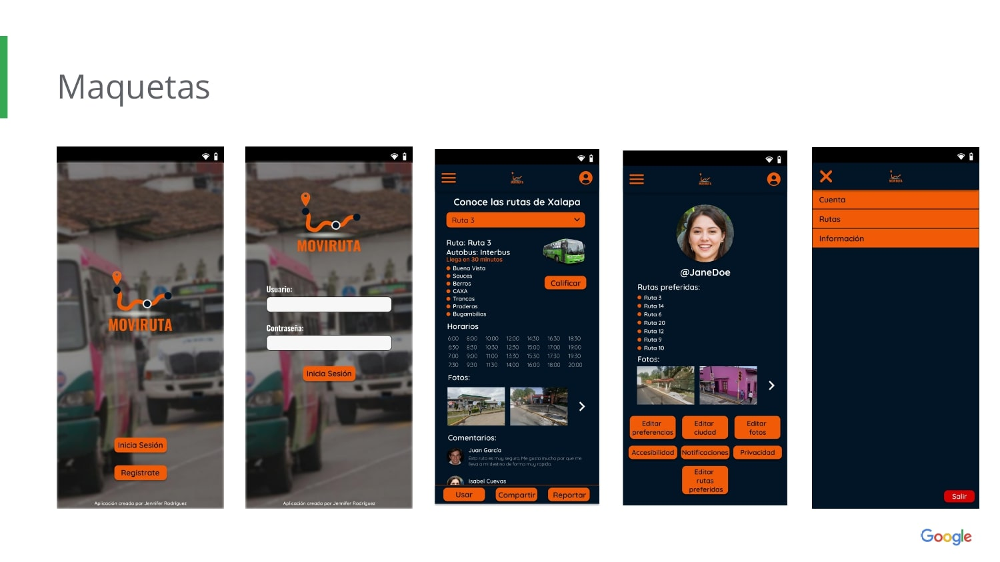

El problema
Necesito desarrollar un portfolio profesional en línea que permita a los reclutadores y personas interesadas ver claramente mis habilidades y proyectos anteriores.
La meta:
Crear una plataforma atractiva y fácil de navegar que destaque mis logros y habilidades, mostrando de manera concisa y convincente mi experiencia y contribuciones profesionales.
Mi rol: |
Publico objetivo: |
|
Diseñadora de UX/UI y Programadora |
Reclutadores, potenciales empleadores y personas interesadas en tu perfil profesional |
Mis responsabilidades: |
Duración: |
|
Idear, Esquemas de página, auditorías de competencia, Programar |
Junio 2022- Mayo 2024 |
Proceso de Diseño:
Cuando comencé a estudiar Diseño de Experiencia de Usuario, el programa promovía la creación de un portfolio para exhibir todos mis proyectos. Además, tenía el interés de aprender a programar frontend para poder mostrar mis proyectos de programación, UX y electrónica. Como parte de este proceso, revisé varios ejemplos de portfolios y busqué aquellos que se alinearan con mi estilo y la expresión que deseaba transmitir. Desarrollé múltiples versiones de diseño para mi portfolio, pero la versión final, creada en Figma que aprendí durante el curso de UX, fue la seleccionada. En resumen, seleccioné elementos que se adaptaran a mi estilo personal, buscando un diseño minimalista pero creativo que reflejara mi identidad.
Diseños:
El proceso de diseño comenzó con la creación de bocetos en papel para las páginas clave. Seleccione las versiones más prometedoras para dar forma a un diseño atractivo y de fácil navegación. Posteriormente, elabore los wireframes digitales.


Estudio de usabilidad:
Realicé un estudio de usabilidad con 5 participantes de manera remota y no moderada, del cual obtuve 3 conclusiones clave:
- Es fundamental poder visualizar advertencias sobre el tiempo de llegada del autobús o el estado del tráfico.
- Es necesario aumentar el tamaño de la letra para mejorar la legibilidad.
- Se recomienda agregar información sobre los costos de boletos y la accesibilidad en los autobuses.
Maquetas y prototipo de alta fidelidad:
A partir de los resultados del estudio de usabilidad se arreglaron y se agregaron varios detalles y se crearon las maquetas finales. Pueden ver el prototipo de alta fidelidad en el siguiente link:
Prototipo de alta fidelidad de Moviruta Conclusiones y próximos pasos:
Aprendí a entender a los usuarios y a reconocer las necesidades de mi comunidad. Este proyecto es desafiante y tiene un gran potencial para beneficiar a muchas personas. El feedback es esencial para hacer que estos proyectos sean más efectivos y accesibles para todos.
“Fue increíblemente sencillo encontrar una ruta nueva para ir a mi trabajo”
Para próximos pasos se tiene en cuenta las siguientes consideraciones:
- Poner el chat de ayuda para poder obtener respuestas claras.
- Poder visualizar comentarios y calificaciones de los usuarios en el sitio web.
- Poner instrucciones de rutas más precisas y con posibles fotos.